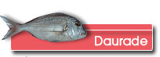
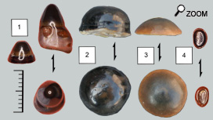
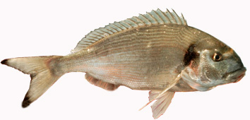

Fossiles trouvés

De manière assez fréquente, il est possible de trouver des dents de daurade. Grossièrement Il y a 2 types de dents : des dents de devant qui sont assez pointues à la manière canines, des dents rondes broyeuses dans le fond de la mâchoire (les plus fréquemment trouvées).
En vérité, il est peut-être un peu réducteur d’attribuer ces dents rondes exclusivement aux daurades. Elles pourraient très bien avoir appartenu à d’autres Sparidae (Diplodus ou Pagellus).
La présence des restes de daurade n’est pas très surprenante puisque l’étude des mœurs des daurades actuelles montre que c’est un animal qui recherche la proximité des estuaires et des étangs côtiers.
La vraie différence entre les daurades du miocène et les daurades actuelles est la taille. Une daurade actuelle peut mesurer jusqu’à 70 cm pour un poids de 6-7 kg pour les individus les plus gros.
Si on prend un facteur d’échelle entre la taille d’une dent d’une daurade du commerce et qu’on reporte ce ratio à la dent la plus grosse montrée ici, alors on obtient une daurade de 1,35 m de long.
Avis aux amateurs de pêche sportive ou de gastronomie!
Connaissance des daurades actuelles
Moeurs
Il s’agit d’un poisson très rapide et très farouche qui se déplace en groupes nombreux le long des côtes.
Lorsqu’elle est effrayée, elle recherche d’instinct la protection de trous sur les fonds rocheux.
Nourriture
 Elle se nourrit de :
- Coquillages et de crustacés dont elle broie les coquilles grâce à ses dents du fond.
- Des vers, de petits poissons qu’il est possible de saisir grâce aux dents de devant pointues.
La densité de daurades peut être très importante aux abords des parcs à coquillages où elle fait parfois des ravages.
Reproduction
C'est un poisson hermaphrodite.
Mâle jusqu'à l'âge de trois ans, la daurade devient ensuite femelle.
Donc, pour une fois il n’est pas utile de se demander le sexe de l’animal dont on vient de retrouver les restes !
|